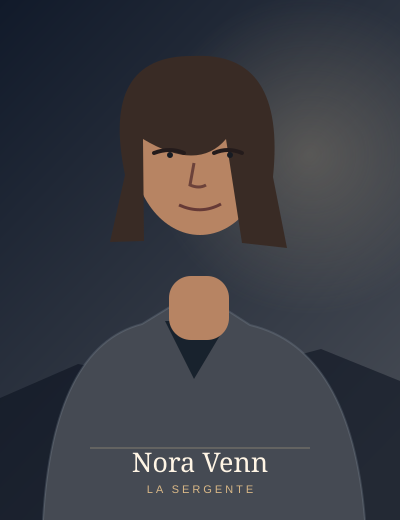
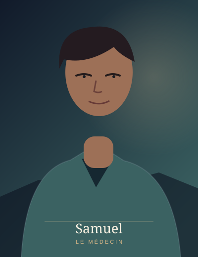
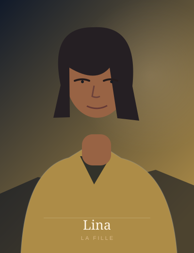
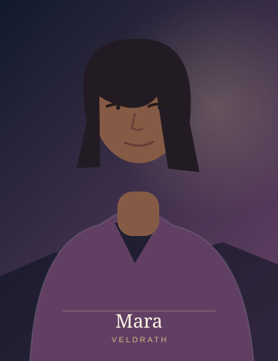
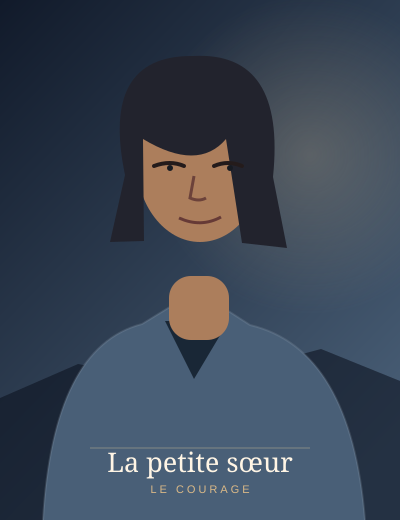
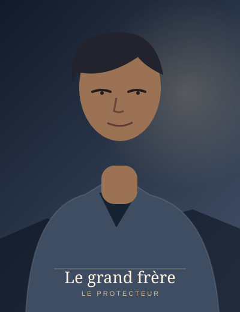

La Dernière Ligne
Elias Mavoko
Capitaine
Il commande l’évacuation de Sarne et doit choisir entre un ordre militaire et la vie des civils.
Liens : Nora Venn
Lire son histoire →Rencontre les protagonistes des œuvres WarLike Ebook. Chaque portrait est une illustration originale de présentation ; les profils s’appuient sur les histoires existantes sans inventer de nouveaux noms pour les personnages anonymes.
Capitaine
Il commande l’évacuation de Sarne et doit choisir entre un ordre militaire et la vie des civils.
Liens : Nora Venn
Lire son histoire →
Sergente
Elle organise les départs, protège les familles et confronte Elias aux conséquences de ses décisions.
Liens : Elias Mavoko
Lire son histoire →
Protagoniste · 32 ans
De retour à Bordeaux après sept ans, elle affronte les regrets qu’elle avait appris à éviter.
Liens : Samuel
Lire son histoire →
Protagoniste · 34 ans
Professionnel de santé à Bordeaux, il refuse de reconstruire son couple sans confiance ni limites claires.
Liens : Adèle
Lire son histoire →
Père de Lina
Après la catastrophe, il traverse une région dévastée pour retrouver sa fille disparue.
Liens : Lina
Lire son histoire →
Fille de Malik · 10 ans
Enfant recherchée après la rupture du barrage ; sa disparition motive le périple de son père.
Liens : Malik
Lire son histoire →
Personnage majeur
Il évolue à Veldrath, au cœur des secrets et des tensions du Tome I : La Cendre et le Réveil.
Liens : Mara, Ceth
Lire son histoire →
Personnage majeure
Sa présence accompagne les événements de Veldrath et les mystères qui entourent Kaïn.
Liens : Kaïn
Lire son histoire →
Héroïne · jeune apprentie ninja
Elle brave la neige et l’épuisement pour conduire son frère empoisonné jusqu’à la guérisseuse.
Liens : Son grand frère
Lire son histoire →
Ninja du clan
Blessé pendant l’attaque du clan, il tente de protéger sa sœur malgré un poison inconnu.
Liens : Sa petite sœur
Lire son histoire →Les illustrations sont des portraits stylisés de référence. Elles ne sont pas des photographies, ni des visuels officiels validés définitivement pour les adaptations en manga.